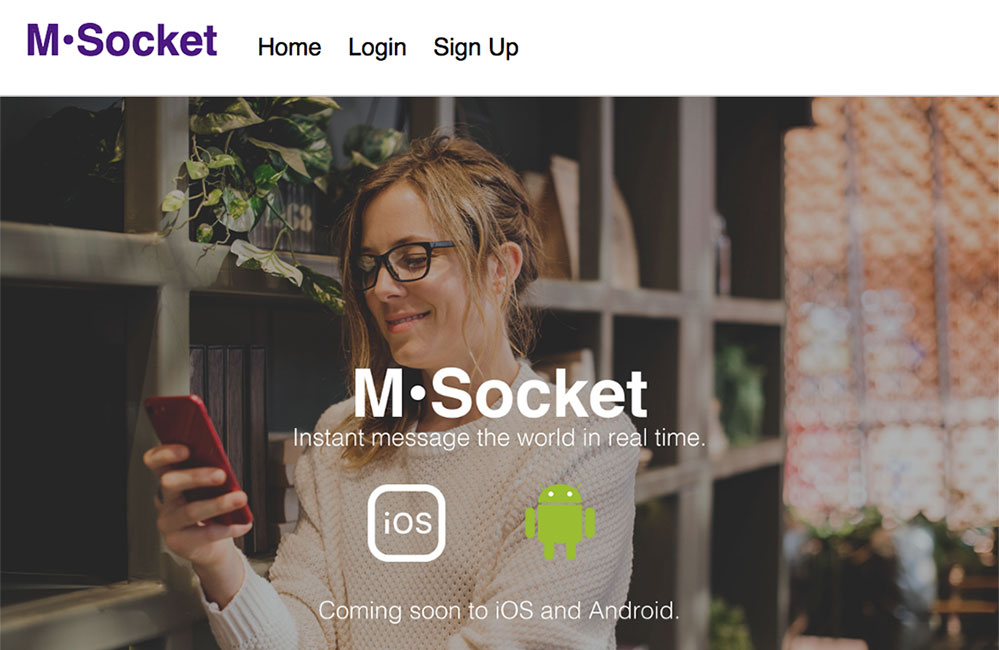
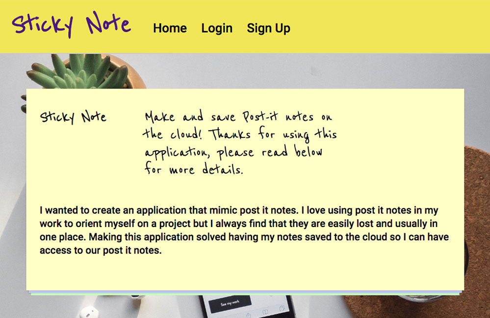
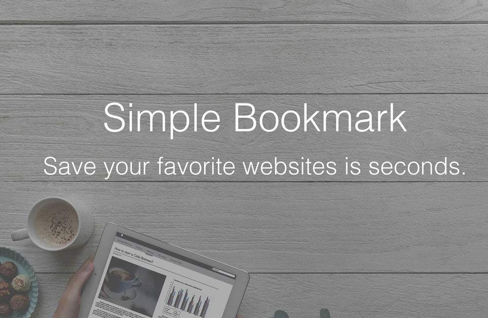
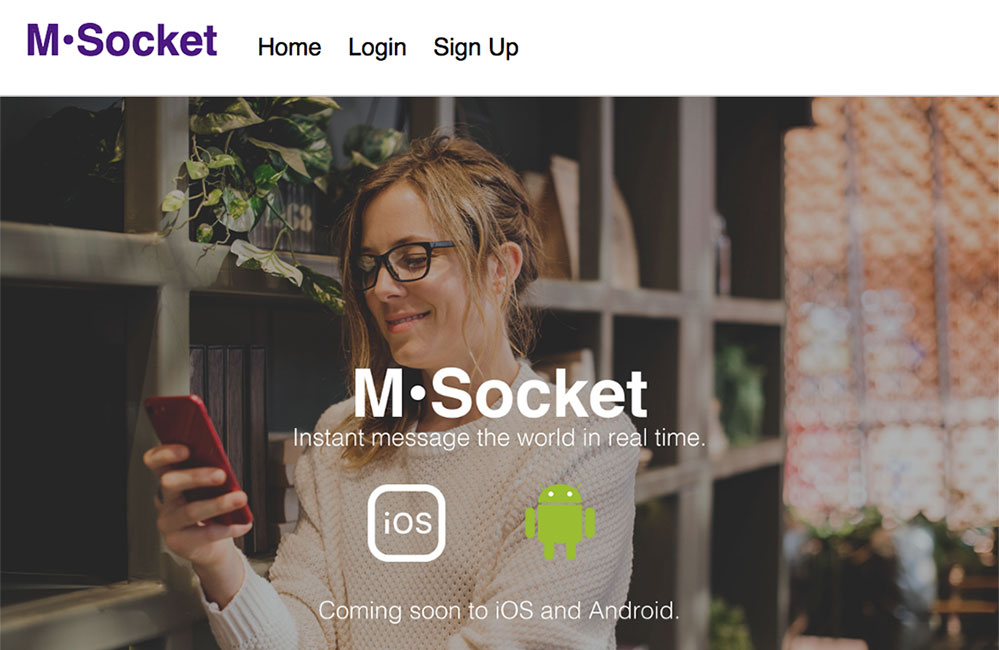
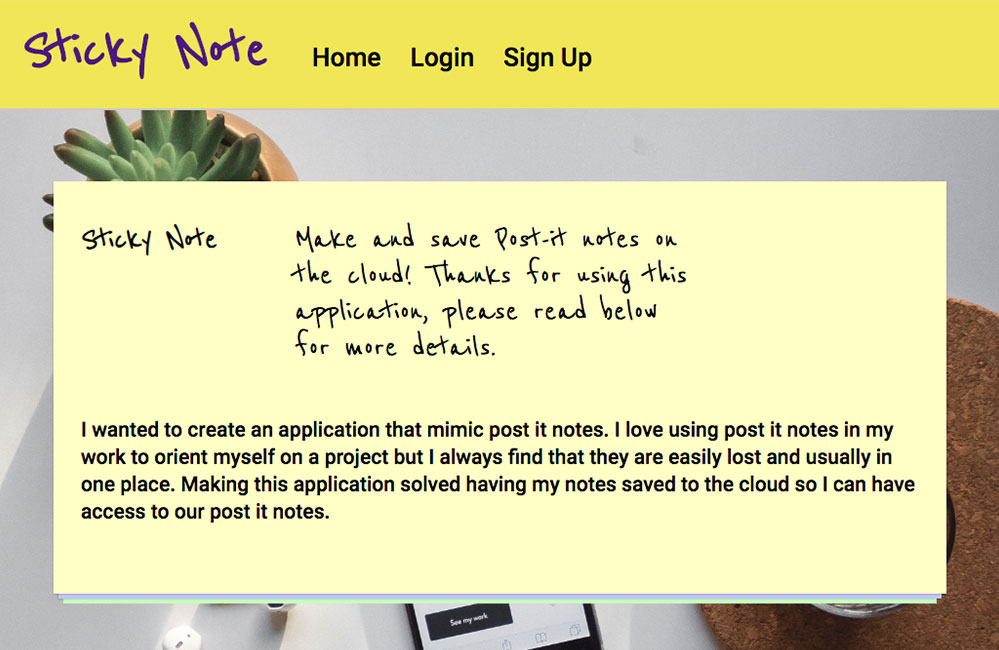
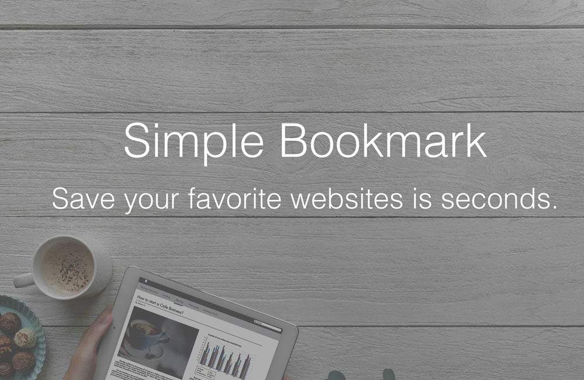

My
Work

This is an application uses Web Socket (Socket.io) technology to create a person to person(s)
instant messenger web app.
The frontend is powered by React, Redux, Socket.io client. The server is a NodeJS Express
server,
using MongoDB and Passport for creating an account.
M•Socket
GitHub

I wanted to create an application that seemed liked post it notes. I love using post it notes
in my work to orient myself
on a project but I always find that they are easily lost and usually in one place. Making this
application
solved having my notes saved to the cloud so I can have access to our post it notes.
Sticky Note
GitHub

With this web application, you can save a website as a bookmark to a list and add your own
titles and/or descriptions.
Simple Bookmark
GitHub
 I created this WordPress website for a printable guide to understanding ux design. Created by
Noel Saw, David Nguyen, and
Shri Jambekhar. UX Design Kit is an all-in-one User Experience process workbook.
UX Design Kit
I created this WordPress website for a printable guide to understanding ux design. Created by
Noel Saw, David Nguyen, and
Shri Jambekhar. UX Design Kit is an all-in-one User Experience process workbook.
UX Design Kit
About
Me
Hello, it's good to meet you!
What I know
I am originally from Brooklyn, New York, I moved to Los Angeles, California to be a part of the tech
industry.
I want to change the world the way that California tech companies have been changing the world with
its
great software companies and innovative products.
Dynamo Designs
Full-Stack developer
A business name created and owned by myself for web development purposes. I utilize Amazon DynamoDB
flexible
NoSQL database services for consultations and full-stack contract work.
Verizon Wireless
Contract Frontend Web Developer
Created responsive marquees, web pages and banners with HTML, CSS, and JavaScript on Adobe
Experience Manager for B2C and
B2B customers. Utilized JSON to connect Verizon’s database of phones and prices to customer facing
sales
pages. Debugged defective post-launch web pages for Verizon’s campaigns.
Neochrome
Web Designer
User Experience Designer, and WordPress Web Designer. Duties include creating user journeys,
personas, and wireframes with
Adobe Illustrator for Neochrome’s clients. Set up and maintain content on multiple
WordPress-powered
sites. Assist with projects and managing them with Basecamp, and Trello.

This is an application uses Web Socket (Socket.io) technology to create a person to person(s)
instant messenger web app.
The frontend is powered by React, Redux, Socket.io client. The server is a NodeJS Express
server,
using MongoDB and Passport for creating an account.
M•Socket
GitHub

I wanted to create an application that seemed liked post it notes. I love using post it notes
in my work to orient myself
on a project but I always find that they are easily lost and usually in one place. Making this
application
solved having my notes saved to the cloud so I can have access to our post it notes.
Sticky Note
GitHub

With this web application, you can save a website as a bookmark to a list and add your own
titles and/or descriptions.
Simple Bookmark
GitHub
I created this WordPress website for a printable guide to understanding ux design. Created by
Noel Saw, David Nguyen, and
Shri Jambekhar. UX Design Kit is an all-in-one User Experience process workbook.
UX Design Kit
About Me
Hello, it's good to meet you!
What I know
I am originally from Brooklyn, New York, I moved to Los Angeles, California to be a part of the tech industry. I want to change the world the way that California tech companies have been changing the world with its great software companies and innovative products.
Dynamo Designs
Full-Stack developer
A business name created and owned by myself for web development purposes. I utilize Amazon DynamoDB flexible NoSQL database services for consultations and full-stack contract work.
Verizon Wireless
Contract Frontend Web Developer
Created responsive marquees, web pages and banners with HTML, CSS, and JavaScript on Adobe Experience Manager for B2C and B2B customers. Utilized JSON to connect Verizon’s database of phones and prices to customer facing sales pages. Debugged defective post-launch web pages for Verizon’s campaigns.
Neochrome
Web Designer
User Experience Designer, and WordPress Web Designer. Duties include creating user journeys, personas, and wireframes with Adobe Illustrator for Neochrome’s clients. Set up and maintain content on multiple WordPress-powered sites. Assist with projects and managing them with Basecamp, and Trello.